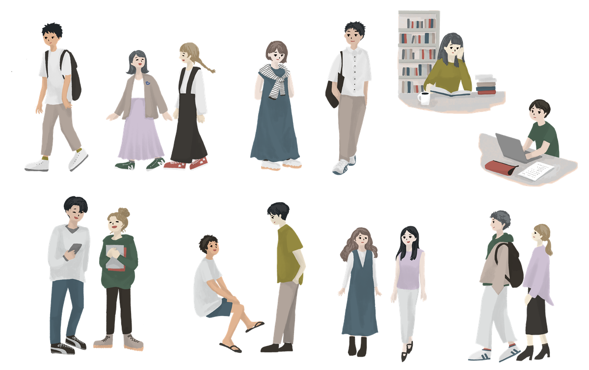

SUPPORT
学費・奨学金・学生サポート
進学にかかる費用の目安と、利用できる経済的支援の種類をまとめました。受験生と保護者の方が一緒に確認できるよう、よくある質問もあわせて掲載しています。

TUITION
初年度納付金の目安
※金額はすべてサンプル表記です。各大学の公式情報をご確認ください。
区分
入学金
授業料（年額）
施設設備費など
初年度合計
{{ t.k }}
〇〇万円
〇〇万円
〇〇万円
〇〇万円
学費のほか、教科書代・通学費・一人暮らしの場合は住居費や生活費も必要です。家族で事前に総額を見積もっておきましょう。
奨学金・経済的支援の種類
{{ a.no }}{{ a.t }}
{{ a.tag }}
{{ a.d }}
申込時期や条件は制度ごとに異なります。高校の担当の先生にも相談しましょう。
FAQ
よくあるご質問